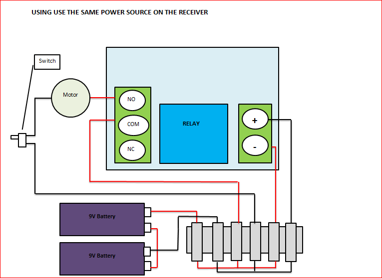
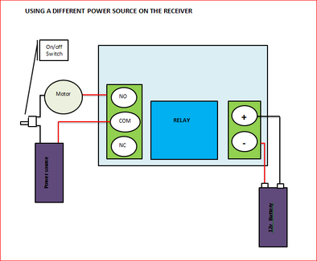
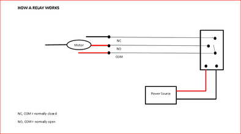

In this Instructable I’ll show you how to add a cheap remote control to just about anything! that takes your fancy.
Last year I built a compressed air rocket launcher which was featured in MAKE Magazine.
The rocket launcher is a heap of fun and my kids love it.
The rockets themselves are made from paper and masking tape and are surprisingly strong and robust.
So strong in fact that you can tape a “spy” camera to one and shoot it off and get some great aerial footage as I did in this Instructable.
One of the drawbacks of the design is you need to have a wire attached to the launcher and then trigger with a switch at the other end whenever you want to launch a rocket.
The wire has to be long as you don’t want to get too close to the rocket when it goes off, and it always seems to get tangled and twisted.
To alleviate this I decided to add a remote control to the launcher and get rid of the wire altogether.
After a little searching I found this remote control on EBay.
It only set me back a couple of bucks and works like a charm.
Check out the Youtube clip below - Apologies for the dodgy American accent!
This Instructable is really just a guideline on how to wire one of the remotes up as I couldn’t find much at all on the net.
I hope it also gives you a few ideas on what you could hook one of these remotes up to.


Part needed:
Tools needed:


The remote is made up of the (surprise surprise!) a remote (transmitter) and a receiver.
The remote is powered by a small 12v battery and works from a distance of supposedly 100 meters, although I’d be wary of this!
The wireless signal can pass through walls, floors and doors.
Once the button on the remote has been pressed, it activates the receiver which turns on a relay and allows power to flow to whatever you want to turn on.
The remote control receiver needs to have 12v to enable it to trigger the relay.
I used 2 X 9v batteries to do the job and it works fine but you could potentially use a small, 12v battery; the same used in the remote.
As the rocket launcher uses 18V to activate the sprinkler valve, I was able to wire up the receiver so when the relay was closed (activated by the remote) it used the power from the 2, 9V batteries to trigger the sprinkler valve.
If your device that you want to power uses a different voltage then the receiver, then you can also rig it up so it uses a different power source.



The 2 drawings attached show the different ways that the receivers can be wired.
The first is if you want to use the same power source as the receiver, and the second is if you want to use an alternative power source.
For the Compressed Air Rocket I used the first option.
There is also an on/off switch added to the receiver.
I found that the receiver slowly leaks power (it's always on) so you will need to add a switch to make sure you can turn it off when your not using it
Relays:
I have also included a drawing of how the relay works. For more info check out this website - its really good at explaining how they work.


Steps:


Steps:


Steps:


Now you have one fine looking remote control - time to go and take over the world.
Have fun and if you making something cool - post a picture so i can check it out!